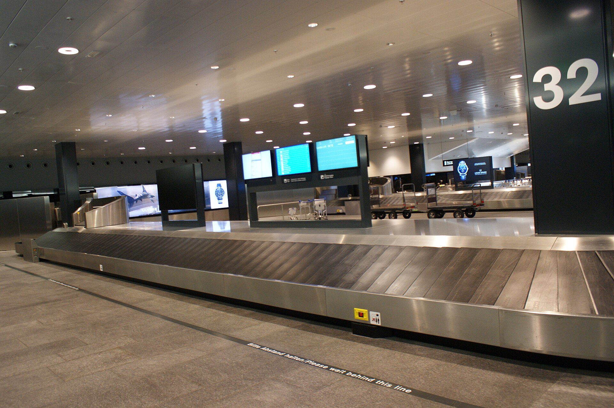

行李轉盤：為什麼你的行李總是看起來最後出來？
從託運櫃檯到機腹，再從拖車到轉盤：行李每換一次手，「先來後到」就可能失去意義。
行李轉盤旁的人都在等同一班飛機，箱子卻一件件分批出現。「下次晚一點託運就好，最後裝的會先卸。」這個建議像是一個簡單的抽屜問題：東西疊在一起，最後放入的在最外面。但旅客在櫃檯交出的箱子，並沒有直接進入那個抽屜。它先經過篩檢、分揀與裝載，抵達後又要與轉機行李分流。要判斷這個訣竅是否可靠，得先看清楚：你控制的是哪一站的時間，而真正決定出件的，又是哪一站。

一、先把「最後」拆成三個不同時刻
最後託運、最後送到機邊、最後裝進貨艙，是三件事。Travel + Leisure 的採訪承認，最後裝入的行李往往可能較早卸出，但同時強調裝機可以按不同順序進行，不能保證[2]。這個說法描述的是一種局部的裝卸條件，並沒有建立從櫃檯時間一路到轉盤次序的必然關係。
櫃檯之後就有重新排序的機會。美國 TSA 的流程說明指出，託運行李交由安檢，檢查完成後才由航空公司送上飛機[4]。這是美國流程，不能當成全球每個機場的作業手冊；但它足以示範問題所在：即使兩人前後交件，只要中間檢查時間不同，抵達下一站的先後就可能改變。
「晚交所以早拿」要成立，必須再假定兩箱走同一路徑、途中沒有不同的等待、裝卸順序保持可預測。任何一個條件失效，櫃檯上的幾分鐘就不再有推算力。這不是否認有些航班恰好如此，而是區分一次經驗與可重複利用的規則。
二、飛機裝的可能是一組箱子，不是一列箱子
部分機型以散裝方式放行李，另一些使用 ULD 裝載單元。IATA 的官方介紹說明，ULD 可以把行李、貨物與郵件成組固定；經認證的 ULD 被視為可拆卸的飛機部件，裝載必須符合重量、重心、輪廓及固定要求[6]。這些限制服務的是飛行安全，不是櫃檯排隊的公平。
一旦行李先被裝進容器，就多了兩個層次：你的箱子在容器中的位置，以及容器在機艙中的位置。即使某個容器較晚上機，也不能直接推導你那一件在容器內最容易拿出。把整個貨艙想成只有一個出口、一疊箱子的模型，少算了這層結構。
這些資料並未建立「優先件永遠放哪一艙」的通則；不同機型與裝載安排仍要個別確認。不過，載運單元、重量平衡與現場裝載，已足以讓交件時間不是唯一輸入。
三、落地之後，還要決定它是不是你的目的地
飛機停妥不代表全部行李都該去同一座轉盤。目的地行李要交還旅客，轉機行李則要送往下一段行程。行李系統供應商 BEUMER 對常見抵達流程的介紹是：地勤用拖車或 ULD 將箱子送來，再把轉機件與抵達件卸上不同輸送帶[11]。這份文字來自推廣自動化的廠商，適合了解它描述的實際步驟，卻不宜單靠它判斷全球普及程度或效益。
這表示轉盤是好幾個先前步驟的匯流點。從飛機卸下來、被拖車帶走、卸上正確輸送帶、最後進入旅客看得到的空間，每一站都有自己的作業節奏。即使你的箱子已離開飛機，也可能尚未進入送往轉盤的那條線。
同一家廠商也介紹把抵達件送進自動處理系統、再分往轉盤或轉機目的地的做法。不能因此斷言機場都一樣；反而正是這種流程差異，解釋了為何一個航站試過有效的訣竅，換機場後便不可靠。
四、優先標籤是作業指令，不是箱子的特權護身符
優先行李確實是一項制度，不是都市傳說。ANA 的待遇頁說明，符合資格的行李會貼上優先標籤並優先裝卸，同時列出轉機航空公司、航線與機場可能影響服務的限制[7]。日航的付費服務則明確寫出，適用國際航班的行李與商務艙行李一同優先送出，並以行程例子說明在哪一段抵達時進入首批[8]。
這裡的「首批」不是承諾每位付費者都拿到第一件。多名旅客可能同時有優先待遇，轉機與目的地又會改變適用段落。真正可檢查的是航空公司承諾了哪種作業、哪個抵達點，以及沒做到時如何處理，不是只看行李條的顏色。
香港消費者委員會曾公布一宗投訴：包含優先行李的加購服務沒有如期實現，其中一件因掛牌脫落及外判作業而延後，航空公司最後退款[9]。個案不能算出失敗率，卻指出這種服務仍須經過標籤辨認與人員交接。指令存在，不等於每次執行都不會失手。
五、「已抵達」是一筆紀錄，還不是倒數計時
IATA 的第 753 號決議要求會員航空公司在行李旅程的四個核心點留下追蹤紀錄：向旅客接收、裝上飛機、送達轉機交接點、交還旅客[12]。重點是交接可追溯，航空公司之間也能交換必要資訊。它不是要求每個箱子都裝上能連續回報座標的設備。
因此，App 顯示「已抵達」時，先問那個狀態代表哪個掃描事件。它可以協助確認箱子有沒有進入某段流程，卻未必包含下一部拖車何時出發、輸送帶前還有多少件等資訊。卡達航空官網提供追蹤及延誤申報入口[10]，也不能因此推論狀態頁會給出轉盤的逐件排序。
追蹤解決的是「交到哪裡、由誰接手」的資訊問題；排序則還牽涉後續資源與作業。這個差別和包裹物流相似，但航空行李多了航機裝載與轉機銜接，不能把宅配的預計抵達時間直接搬過來。
六、能控制的，比猜次序更少，也更實際
上述流程與服務條款，都沒有建立託運時間能可靠預測轉盤名次的規則。結論因此不是「早託運一定好」或「晚託運一定錯」，而是：沒有足夠依據值得為了賭順序，刻意壓縮報到時間。
比較可用的做法是確認行李條上的目的地、保存託運憑證，若加購優先待遇就看清楚適用航段，延誤則使用實際營運航空公司的申報方式。至於「我總是最後拿到」的感覺，若真想檢查，得記下多次航班的等待時間與出件分布；單次漫長的等待，不能替整條物流系統排出一條規則。
查證資料來源12 項
實際支持文中事實主張的來源，逐條標註支持的內容；文內如有 [數字] 標記，對應此處編號。
- How to Get Your Luggage First at Baggage Claim（Condé Nast Traveler，2017-07-05） ↗
- How to Get Your Luggage to Arrive First at Baggage Claim（Travel + Leisure，2023-05-31） ↗
- 桃機建置行李自動分揀系統 準確率達99.5%（中央社，2019-12-13） ↗
- Security Screening: Checked Baggage Screening（美國運輸安全管理局 TSA） ↗
- 無限萬哩遊會員優惠待遇：金卡（長榮航空） ↗
- What is Aircraft ULD in Air Transport?（國際航空運輸協會 IATA） ↗
- 尊榮會員的優惠待遇：優先裝卸託運行李（全日空 ANA） ↗
- 日航國際付費行李優先提取服務（日本航空 JAL） ↗
- 機票附加增值服務多投訴 更新調動客服要做好（香港消費者委員會） ↗
- Your baggage guide（卡達航空 Qatar Airways 官方） ↗
- Inbound Baggage Handling: Is It Time to Rethink?（BEUMER，2024-08-29） ↗
- Baggage Tracking（IATA，2026-11-04查閱） ↗
延伸探討
把故事帶回自己的思考
如果航空公司只能多提供一項資訊，你更想知道箱子最後一次掃描的位置、預計上轉盤的時間，還是優先服務是否有確實執行？哪一項會真正改變你在轉盤前的行動？